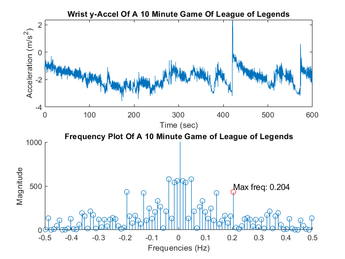
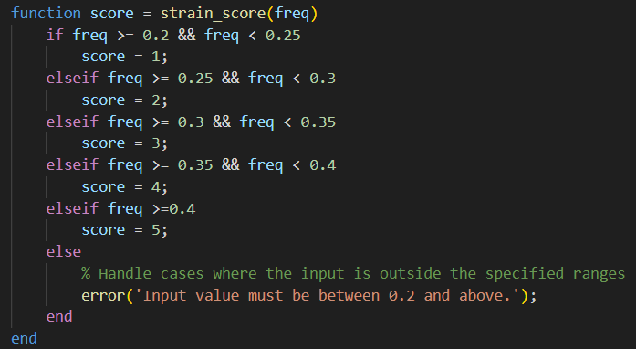

Results
Game Graphs
When determining the max frequency, values below 0.2 Hz were ignored since those frequencies are most likely results of downtime during gameplay.

Figure 1. A graph obtained from League of Legends, a MOBA game.
The max frequency is 0.204 Hz.
Figure 2. A graph obtained from Frostpunk, a Strategy game.
The max frequency is 0.206 Hz.
Figure 3. A graph obtained from Counter Strike 2, a FPS game.
The max frequency is 0.31 Hz.
Figure 4. A graph obtained from Titanfall 2, a FPS game.
The max frequency is 0.324 Hz.
Figure 5. A graph obrained from Risk of Rain 2, a TPS game.
The max frequency is 0.38 Hz.
Wrist Pain Scale
The MATLAB code snippet above shows how we simplified the maximum frequencies we obtained from each game to a scale from 1 to 5 on wrist pain-- 1 being on the lower end of possible wrist pain (with frequencies between 0.2 to 0.25) and 5 being the higher end, with wrist movement frequencies above 0.4 Hz.
In this scale, the games below would score wrist pain numbers of:
Conclusion
Our frequency analyses of each game's horizontal mouse movement indicate that FPS and TPS games (where the player must constantly move their mouse around to change their camera view and aim in specific spots) have more frequent wrist movements than a game like League of Legends, where the camera is relatively fixed in a birds-eye view and needs less aiming in particular parts of the screen.
We discovered a research paper by Christina Bach Lund et. al analyzing similar wrist movements in different occupations and their relations to development of Carpal Tunnel Syndrome. In this paper, the mean power frequencies of wrist movements during the work day were calculated and a clear connection was found between higher-frequency wrist movements and an increased risk to developing Carpal Tunnel Syndrome.
In a more slow-paced game like League of Legends, the average wrist movement frequency was found to be < 0.2 Hz; in the paper, this frequency corresponded to jobs such as office workers and bank assistants. Given that there aren't many constant, fast mouse movements in League of Legends, this relationship makes sense. On the other hand, fast-paced games where the player has to rapidly move their mouse (to either switch camera views or aim) had higher frequencies in the range of 0.3 - 0.45 Hz. Wrist-intensive jobs, such as laundry and slaughterhouse workers, had similar high wrist frequencies.
What does this tell us?
In games from the FPS and TPS genre, where constant and rapid mouse movements are required, players are essentially moving their wrist as frequently as people in intensive jobs would. Meanwhile, games with less aiming and less need to switch camera views have fewer wrist movements. Therefore, in TPS and FPS games, players should be more mindful of how often they're playing and make sure to take breaks in between so they don't damage their wrists.
Recommendations and Application
Many of the methods and exercises of companies for office worker ergonomics can be applied to gaming. Both spend prolonged periods in an office setting with continuous and sometimes rapid wrist movement. Some of those methods include posture, proper angle of your wrist, periodically changing positions, and stretching.
While these exercises are often preached as good practice, many do not follow them. That is where our data can become useful. Two categories determine when an injury can occur. Rapid and prolonged movement are both the worst-case scenarios. Using the existing data, we can create metrics and recommendations based on the type of activity. Or, if we want to integrate a smart and active system, we could have data be viewed live. Similar to a fitness watch telling you to get up and move, we can have a device actively monitor wrist frequency to determine when breaks or exercise are needed.
However, what do we do if said movement needs to be done during a long-duration game? One can't simply stop playing when the action is at its climax. A simple game monitoring software like Overwolf can be paired to our device's programming to avoid the issue.
The two genres of games that generated the highest frequency were FPS and TPS games; thus, following recommended ergonomic practices or using your forearm more instead of only your wrist is vital.
Below are some wrist exercises we heavily recommend you do in between or after games:
Sources
Lund, Christina Bach et al. “Movements of the wrist and the risk of carpal tunnel syndrome: a nationwide cohort study using objective exposure measurements.” Occupational and environmental medicine vol. 76,8 (2019): 519-526. doi:10.1136/oemed-2018-105619
Fort HealthCare. “Hand & Wrist Stretches for Computer/Smartphone Users.” Fort HealthCare, 24 Oct. 2023, www.forthealthcare.com/hand-and-wrist-stretches-for-computer-and-smartphone-users/